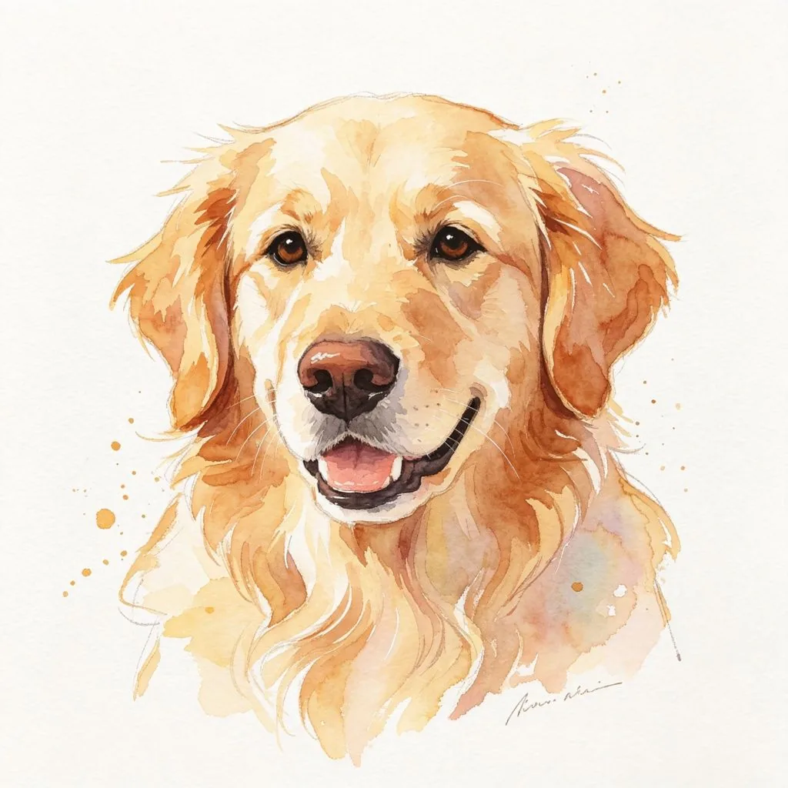

清晨的陽光透過窗簾灑進房間，在地板上形成一片溫暖的光斑。一隻柯基犬走到光斑中，伸了一個大大的懶腰——前腿向前伸展，屁股高高撅起，後腿蹬直，整個身體形成一個完美的「下犬式」。這個姿勢，正是瑜伽中最經典的動作之一。難道狗狗也會做瑜伽？
狗狗的「瑜伽」本能
其實，狗狗的伸展動作和瑜伽有著驚人的相似之處。狗狗在睡醒後、長時間休息後或準備活動前，都會自動地做一系列伸展動作——前腿伸展、後腿伸展、側身伸展、扭轉身體。這些動作和瑜伽中的很多體式（如下犬式、眼鏡蛇式、貓牛式）非常相似。
這種伸展本能是狗狗的身體自我調節機制。長時間休息後，肌肉會變得僵硬，血液循環變慢。透過伸展，狗狗可以放鬆肌肉、促進血液循環、增加關節靈活性，為接下來的活動做好準備。這和人類做瑜伽或熱身的原理是一樣的。

狗狗的運動需求
除了自發的伸展，狗狗還需要規律的運動來維持身心健康。不同品種、年齡和體型的狗狗有不同的運動需求：
- 幼犬：精力旺盛，需要大量的短時間運動和玩耍。但要注意不要過度運動，以免影響骨骼發育。
- 成年犬：每天需要30分鐘到2小時的運動，取決於品種和體型。工作犬（如邊境牧羊犬、德國牧羊犬）需要更多的運動和腦力刺激。
- 老年犬：運動量可以適當減少，但仍然需要規律的輕度運動（如散步、游泳）來維持關節靈活性和肌肉力量。
- 小型犬：雖然體型小，但很多小型犬（如吉娃娃、約克夏）精力旺盛，需要規律的運動。但要注意不要過度運動，以免造成關節損傷。
- 大型犬：需要更多的運動空間和時間，但在骨骼發育完成前（通常1-2歲）不要過度運動。
規律的運動對狗狗的好處是多方面的：維持健康體重、預防肥胖和相關疾病、增強心肺功能、改善消化系統、減少焦慮和破壞性行為、增加與主人的互動和紐帶。可以說，運動是狗狗身心健康的基礎。
和狗狗一起晨練的好處
如果你有早起的習慣，不妨和狗狗一起晨練。這不僅可以讓狗狗得到運動，也可以讓你自己受益：
首先，早晨的空氣清新、溫度適宜，是運動的最佳時機。帶狗狗在清晨散步或慢跑，可以讓你和狗狗都呼吸到新鮮空氣，享受寧靜的早晨時光。
其次，晨練可以幫助你和狗狗建立規律的作息。狗狗是習慣性動物，規律的晨練可以讓狗狗的生活更加有節奏，減少焦慮和不安。
第三，晨練可以增加你和狗狗的互動和情感紐帶。在運動過程中，你和狗狗可以一起探索新的路線、遇到新的朋友、創造新的回憶。
狗狗運動的注意事項
1. 循序漸進：不要突然增加運動量，要循序漸進，讓狗狗的身體有時間適應。2. 避免極端天氣：在高溫、嚴寒或惡劣天氣下不要帶狗狗外出運動。3. 隨身攜帶水：運動過程中要定時給狗狗補充水分。4. 注意狗狗的反應：如果狗狗表現出疲勞、呼吸困難、跛行等症狀，應立即停止運動。5. 運動後不要立即餵食：運動後至少休息30分鐘再餵食，以免引起消化問題。6. 定期檢查：定期帶狗狗做健康檢查，確保狗狗的身體狀況適合運動。
晨光瑜伽的柯基，用牠的伸展和從容，告訴我們運動的重要性。不管是狗狗還是人類，規律的運動都是身心健康的基礎。或許，明天早上你也可以和你的狗狗一起，在晨光中做一個大大的伸展，開始美好的一天。